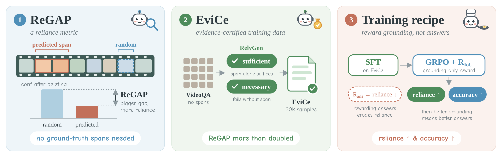
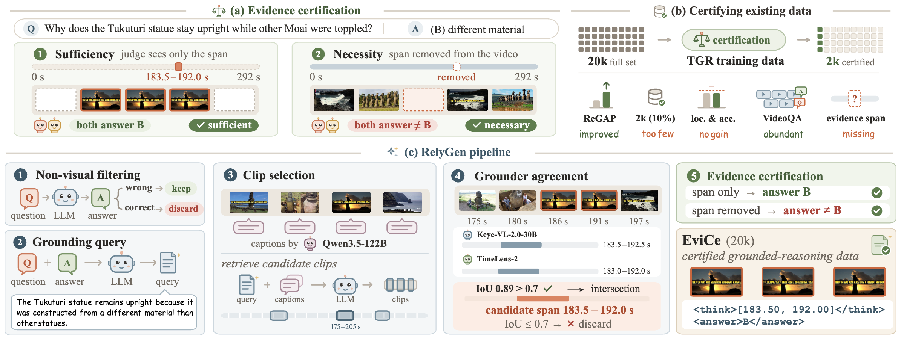
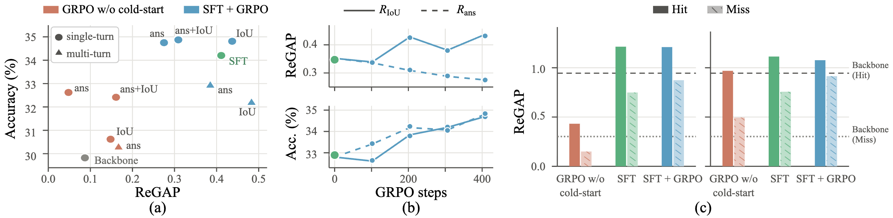

Temporally Grounded Reasoning · Video LLMs
MHUG, University of Trento, Italy
A short overview of the paper (with music: turn the sound on).
TL;DR Temporally grounded reasoning models point at the right moment, but their answers often do not depend on it. We measure this grounding reliance with ReGAP, build data (EviCe) and a recipe that make grounding count, and show that better grounding improves answers only when the answer relies on it.
Temporally Grounded Reasoning (TGR) models first predict the video spans that support their answer, and then answer the question. Whether the answer actually depends on these spans is still unclear, and existing benchmarks were not designed to measure this dependence, which we call grounding reliance. We study this by introducing ReliaNeedle, a controlled needle-in-a-haystack benchmark whose answers require the visual evidence inside the annotated span. To measure reliance without ground-truth span annotations, we introduce ReGAP, which compares the confidence change after deleting the predicted span with that after deleting equally long random segments, and validate it on ReliaNeedle. Despite strong results on standard metrics, most TGR models rely on their predicted spans less than their pretrained backbones do. We trace this weakness to training data and recipes. For the data, we introduce RelyGen to annotate VideoQA pairs with correctly located, necessary evidence spans; training on just 20k such samples more than doubles ReGAP. Our training analysis shows that supervised initialization is needed to couple answering with localization. Subsequent reinforcement learning with a grounding-only reward improves both reliance and accuracy, whereas rewarding answers erodes reliance. Finally, better temporal grounding improves accuracy only for high-reliance models, showing that temporal grounding helps video reasoning only when the answer relies on it.

Delete the frames of the predicted span and watch the answer. Then delete equally long random blocks instead. If the answer relies on the span, only the first deletion should hurt.
p is the model's probability for its own answer. ReGAP = 0: the predicted span matters no more than random frames. ReGAP ≈ 1: deleting the span typically drops the answer probability to about 0.5. Random blocks have the same number of frames as the span and are placed outside it; their positions above are illustrative, the probabilities are the real ones for this item.
725 four-option questions. Each video inserts a real action clip into an unrelated Video-MME video, so the answer lives in a known span and only there. This lets us validate ReGAP and split reliance by whether the predicted span hits or misses the evidence.
One ReliaNeedle item: a short STAR / Charades clip (the needle) is inserted into an unrelated Video-MME video, and only the needle can answer the question. Playback is 10× outside the needle and 2.5× inside.
Hit / Miss: ReGAP on items where the predicted span overlaps the evidence (IoU ≥ 0.3) or not. Click a column to sort.
| Model | ReGAP ▾ | Hit | Miss | Acc. (%) | R@0.3 (%) |
|---|
A sample enters EviCe only if two judges from different model families answer correctly from the evidence span alone, and fail once the span is deleted. 20k such samples more than double ReGAP.
Deleting the annotated span of existing TGR training data barely matters: a judge keeps answering correctly. On EviCe the evidence is necessary.
A real sample through the pipeline, with its actual intermediate outputs.

GRPO without a supervised cold start treats the span as a detached output; its reliance stays far below SFT.
From the same SFT checkpoint, GRPO with RIoU raises reliance throughout training; Rans also rewards right answers with wrong spans and erodes it.
Multi-turn tool-calling models behave the same way: with RIoU their reliance is close to the single-turn model.

On ReliaNeedle items where the predicted span misses the evidence, replace it with the ground-truth span and let the model continue.
Accuracy gain (points) from correcting the span. Scaling pure grounding data during GRPO likewise lifts accuracy from 34.7% to 36.8% only for SFT + GRPO (ReGAP stays 0.44–0.46); without the cold start there is no gain and ReGAP drops from 0.15 to 0.11.
For a multi-turn agent that crops and re-watches the video, we force its first crop off the evidence and let it continue. Our agent goes back to the needle; the official Video-o3 answers from the wrong window.
<think>[51.09, 90.96], [91.07, 131.05]</think><answer>A</answer> ✓ The clothes@article{shu2026when,
title={When Does Temporal Grounding Help Video Reasoning?},
author={Shu, Yan and De Min, Thomas and D'Inc{\`a}, Moreno and Mancini, Massimiliano and Rota, Paolo},
journal={arXiv preprint},
year={2026}
}